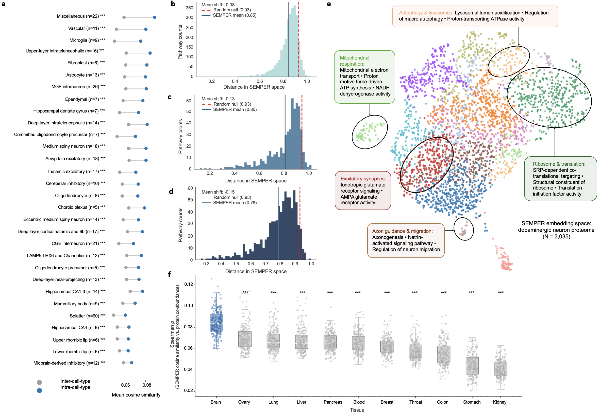
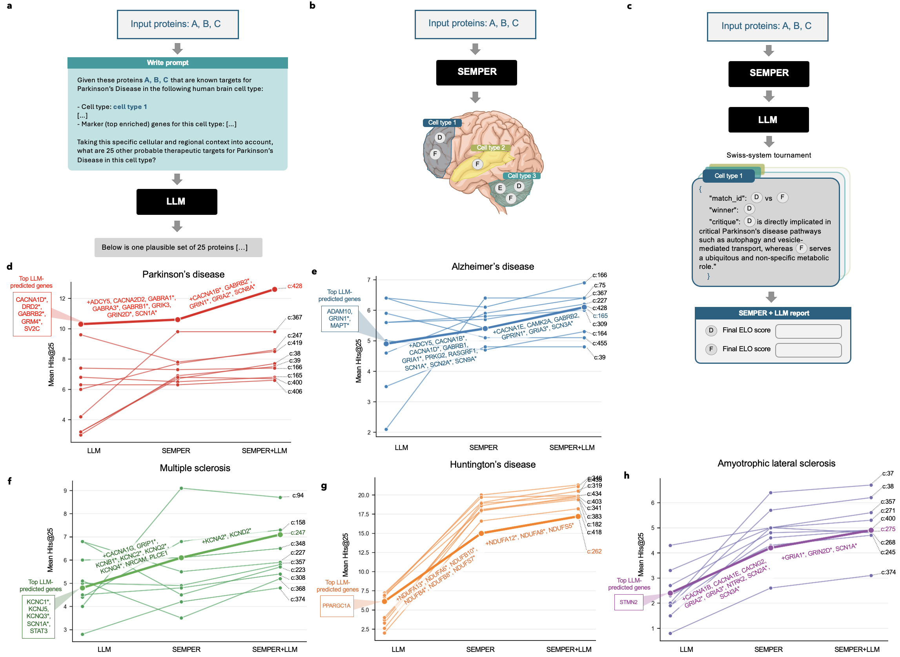

Multimodal protein representations across human brain cell types
SEMPER
1Harvard Medical School, 2Carnegie Mellon University, 3Georgia Institute of Technology, 4Aligning Science Across Parkinson’s (ASAP) Collaborative Research Network, 5Brigham and Women’s Hospital, 6University of Oxford, 7Memorial Sloan Kettering Cancer Center, 8Broad Institute of MIT and Harvard, 9Harvard Stem Cell Institute, 10Department of Data Science, Dana-Farber Cancer Institute, 11Harvard T.H. Chan School of Public Health, 12Kempner Institute, Harvard University, 13Harvard Data Science Initiative
*Equal contribution. †Correspondence: marinka@hms.harvard.edu

Abstract
The central nervous system (CNS) comprises diverse cell types whose molecular context shapes the roles of the proteins they express. Characterizing these context-specific protein functions is important for understanding cellular processes and identifying disease-relevant therapeutic targets. Computational models offer a scalable way to study these roles, with protein language models and interactome- or single-cell-based models capturing complementary information from protein sequences and cellular network contexts. To capture these complementary sources of information in one model, we introduce SEMPER, a multimodal representation learning model that aligns protein language model representations with protein-protein interaction networks from 442 cell types of the adult human brain, giving each protein a sequence-informed representation in every cell type in which it is expressed. We show that SEMPER representations predict cell type-specific protein complexes and predict genes essential to the survival of dopaminergic neurons, measured in a genome-wide CRISPR screen. In zero-shot retrieval, SEMPER recovers clinically pursued drug targets for five neurodegenerative diseases at higher rates than existing cell type-specific models. To further improve target recovery, we combine SEMPER with a large language model that reasons over protein functional annotations. The combination recovers more targets, with SEMPER providing experimentally derived cellular context that complements the literature-based reasoning of the large language model.
Method
The networks come from a single-nucleus RNA sequencing atlas of the adult human brain (about 3.37 million nuclei from 112 anatomical locations). Intersecting each cell type's expressed genes with a cell type-agnostic interactome gives 442 cell type-specific PPI networks, and a metagraph of 599 cell types and tissues records how they relate. In total there are 15,487 proteins and 1,256,780 protein–cell type pairs.
A graph transformer encodes each protein's interactions in each cell type, and ESM encodes its sequence. Both encoders are frozen. Trainable adaptors project the two into a shared space, where a symmetric InfoNCE loss pulls a protein's sequence embedding toward its cell type-specific network embeddings. The result is one representation per protein per cell type, tied to the protein's sequence.
Results
Organization by cell type and function
Across all 30 CNS superclusters, proteins from the same cell type are more similar to each other than to proteins from other cell types (one-sided Mann–Whitney U, BH-adjusted P < 0.001). Proteins that share a Gene Ontology term sit closer together than chance in all three GO domains. In dopaminergic neurons the embeddings separate into 15 modules, among them mitochondrial respiration, autophagy–lysosomal regulation, excitatory synapses and axon guidance. SEMPER similarities also correlate with protein co-abundance from an independent proteomics atlas, more strongly in brain than in the 10 other tissues.


Cell type-specific protein complexes
We curate 547 CNS-relevant CORUM complexes (Supplementary Table 4). A complex is counted as present in a cell type under four definitions: co-expression, co-expression plus physical interaction, co-expression plus brain co-abundance, and co-expression plus subcellular colocalization. Each complex is scored by the mean pairwise similarity of its subunits and ranked against size-matched decoys. SEMPER has a higher AUPRC than PINNACLE, ORCA-CT and PPI-GT under all four definitions (one-sided Wilcoxon signed-rank, all P < 10−12), and its median cell type is above every cell type-agnostic baseline, including ProTrek-Seq.

Clinically pursued drug targets
For Parkinson's disease, Alzheimer's disease, multiple sclerosis, Huntington's disease and ALS, we take the protein-coding genes targeted by drugs that completed Phase 2 or entered Phase 3 or 4 trials (Supplementary Table 6). In each cell type SEMPER is given 15 known targets and ranks the remaining expressed proteins by similarity; we report how many held-out targets land in the top ten, averaged over 100 seed sets.
| Disease | Targets | Phase 2 | Phase 3 | Phase 4 | File |
|---|---|---|---|---|---|
| Parkinson's disease | 97 | 45 | 18 | 34 | PD.csv |
| Alzheimer's disease | 130 | 73 | 48 | 9 | AD.csv |
| Multiple sclerosis | 166 | 47 | 56 | 63 | MS.csv |
| Huntington's disease | 86 | 18 | 67 | 1 | HD.csv |
| ALS | 98 | 71 | 17 | 10 | ALS.csv |
SEMPER recovers more targets than PINNACLE, PPI-GT and ORCA-CT in all five diseases (paired one-sided Wilcoxon, all P < 10−21), with the highest recovery in Huntington's disease (mean Hits@10 of 7.0 over 129 cell types). ProTrek-Seq, which is cell type-agnostic, has a higher mean in PD, AD and MS, but it gives a protein the same representation everywhere, so it cannot say in which cell types targets are easiest to find. SEMPER also improves on each ESM backbone it is built on (Figure 1e).

Essential genes in dopaminergic neurons
A genome-wide CRISPR/Cas9 screen in human iPSC-derived midbrain dopaminergic neurons gives a set of essential genes that is not described in the literature. We compare an LLM prompted with example genes, SEMPER retrieval, and an LLM that rescores SEMPER's top 100 candidates. SEMPER beats the LLM at every cutoff (Hits@25 1.8 vs 1.1, Hits@50 3.4 vs 2.7, Hits@75 4.9 vs 4.1), and the LLM rescoring raises Hits@75 to 5.9. The two pick different genes: the LLM favors well-studied neuronal genes, while SEMPER ranks regulators of G-protein signaling, mitochondrial respiration and protein trafficking (Supplementary Table 8).

Combining SEMPER with a language model
When the LLM scores genes one at a time, it tends to rank AD and ALS targets below genes with a similar mechanism. We instead run a pairwise tournament: SEMPER similarities set the starting Elo ratings of its top 100 candidates, and over five rounds the LLM compares neighboring genes after retrieving their GO annotations through a tool call. This raises mean Hits@25 from 8.3 (SEMPER) to 9.0 across 50 disease–cell type pairs (Wilcoxon P = 6.4 × 10−9); the LLM alone reaches 4.7. For example, the glutamate receptor targets GRIA2 and GRIA3 move above CAMK2A in AD, and the sodium channel targets SCN1A and SCN2A move above calcium channel genes in ALS.


Limitations
SEMPER is limited by the coverage of the single-cell atlas, so representations in sparsely sampled cell types are less reliable. It does not include peripheral immune cells, which leaves many MS targets outside its candidate set. The benchmark measures recovery of targets that are already being pursued, not discovery of new ones, and similarity in the embedding space is associative; predictions need experimental follow-up.
Data and code
The ground-truth datasets used to evaluate SEMPER are in the GitHub repository as CSV and JSON files. They contain no SEMPER outputs and can be used to benchmark any protein representation model. See the folder's README for column definitions and sources.
| Dataset | Contents | Rows | Files |
|---|---|---|---|
| Cell type-specific protein complexes (Supplementary Table 4) |
547 CNS-relevant CORUM complexes and, for each of the four complex definitions, the complexes present in each cell type with ten size-matched decoys per complex, as evaluated in Figure 3 (144, 125, 40 and 36 complexes) | 547 | view complexes |
| Clinically pursued targets (Supplementary Table 6) |
Targets of drugs and compounds in completed Phase 2 or in Phase 3–4 trials for Alzheimer's disease, Parkinson's disease, multiple sclerosis, Huntington's disease and ALS, with clinical phase, ChEMBL/DrugBank drugs, pharmacological action and therapeutic intent (Figures 4–6). The exact target lists used in the analyses are in analysis_target_lists/ |
130 / 97 / 166 / 86 / 98 | view AD PD MS HD ALS |
| Dopaminergic neuron essential genes | Genes essential to the survival of human iPSC-derived midbrain dopaminergic neurons, from the genome-wide CRISPR screen of Nazeen et al. (2026) (Figure 5) | 693 | view csv |
The cell type-specific interaction networks, SEMPER representations and model weights are not released. Code is on GitHub (MIT License), with a tutorial that runs the full pipeline on a demo dataset and reproduces paper-style figures with the same scripts.
Citation
@article{dong2026semper,
title = {Multimodal protein representations across human brain cell types},
author = {Dong, Amy and Li, Michelle M. and Ding, Kerr and Nazeen, Sumaiya and Noori, Ayush and Huang, Yepeng and Gao, Shanghua and Ritter, Dylan and Afroz, Jalwa and Henderson, Alexander B. H. and Studer, Lorenz and Luo, Yunan and Khurana, Vikram and Parmigiani, Giovanni and Zitnik, Marinka},
year = {2026}
}